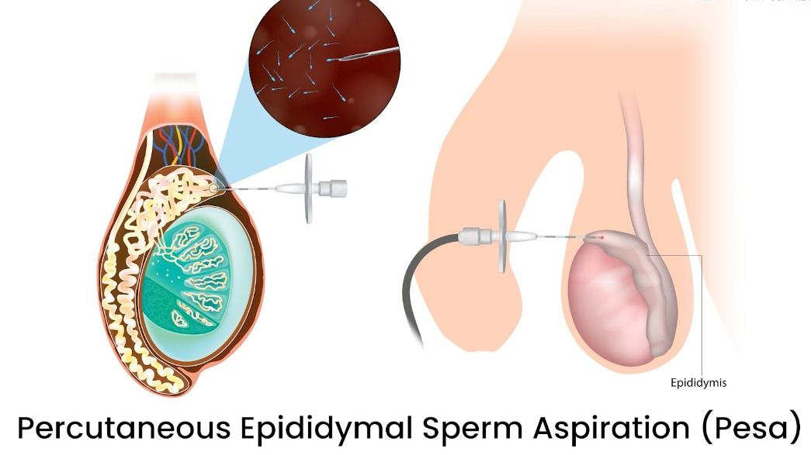

Male Infertility
Male infertility refers to difficulties experienced by a man in achieving a successful pregnancy with a fertile female partner. It is a significant factor in approximately 40-50% of infertility cases, emphasizing its importance in the journey towards parenthood.
Causes of Male Infertility
- Sperm Production Issues:
- Low sperm count (oligospermia)
- Poor sperm motility (asthenospermia)
- Abnormal sperm morphology (teratospermia)
- Azoospermia (complete absence of sperm)
- Hormonal Imbalances:
- Low levels of testosterone or other hormones
- Genetic Factors:
- Chromosomal abnormalities
- Genetic mutations affecting sperm production
- Obstructions:
- Blockages in the tubes that transport sperm (e.g., vas deferens)
- Lifestyle Factors:
- Smoking
- Excessive alcohol consumption
- Drug use
- Obesity
- Exposure to toxins and chemicals
- Medical Conditions:
- Varicocele (enlargement of veins within the scrotum)
- Infections (e.g., sexually transmitted infections)
- Retrograde ejaculation
- Testicular cancer and its treatments
- Environmental Factors:
- Exposure to radiation
- Overheating of testicles (e.g., from frequent sauna use or tight clothing)
Diagnosis of Male Infertility
At Sterling Orthopaedic and IVF Centre, we employ a comprehensive approach to diagnose male infertility, including:
- Medical History and Physical Examination: Evaluating past medical issues, surgeries, and lifestyle habits.
- Semen Analysis: Assessing sperm count, motility, and morphology.
- Hormonal Testing: Checking levels of testosterone and other hormones.
- Genetic Testing: Identifying genetic disorders or chromosomal abnormalities.
- Imaging Tests: Utilizing ultrasound to detect structural issues or obstructions.
- Testicular Biopsy: Evaluating sperm production directly from the testes.
Treatment Options
Our centre offers a range of treatments tailored to address specific causes of male infertility:
- Lifestyle Modifications: Advice on quitting smoking, reducing alcohol intake, and maintaining a healthy weight.
- Medical Treatments: Hormone therapy, medications to treat infections, or improve sperm production.
- Surgical Interventions:
- Varicocele repair
- Vasectomy reversal
- Surgical extraction of sperm (e.g., TESA, PESA, Micro-TESE)
Surgical Sperm Extraction Techniques
- Testicular Sperm Aspiration (TESA)

Testicular Sperm Aspiration (TESA)
Testicular Sperm Aspiration (TESA) is a minimally invasive procedure used to retrieve sperm directly from the testes. It is commonly utilized in cases of obstructive azoospermia, where there is a blockage preventing the release of sperm. TESA involves using a fine needle to extract sperm cells, which can then be used in various assisted reproductive techniques such as Intracytoplasmic Sperm Injection (ICSI). The procedure is typically performed under local anesthesia and has a quick recovery time, making it a preferred option for many patients facing male infertility issues. TESA provides a viable solution for men with non-obstructive azoospermia as well, offering them the possibility of biological parenthood.
- Micro-Testicular Sperm Extraction (Micro-TESE)
Micro-Testicular Sperm Extraction (Micro-TESE)
Micro-Testicular Sperm Extraction (Micro-TESE) is a highly specialized surgical procedure used to retrieve sperm from the testicular tissue. It is typically performed in cases of non-obstructive azoospermia, a condition where sperm production is severely impaired or absent. During Micro-TESE, an experienced surgeon uses an operating microscope to carefully examine and extract tiny amounts of testicular tissue that may contain viable sperm. This meticulous approach increases the chances of finding sperm in men with very low or absent sperm production. The extracted sperm can then be used for assisted reproductive technologies such as Intracytoplasmic Sperm Injection (ICSI). Micro-TESE is a crucial option for men with severe male factor infertility, providing hope for achieving biological parenthood when other methods have failed.
- Percutaneous Epididymal Sperm Aspiration (PESA)

Percutaneous Epididymal Sperm Aspiration (PESA)
Percutaneous Epididymal Sperm Aspiration (PESA) is a procedure to retrieve sperm from the epididymis, the tube where sperm is stored and matures. It is often used in cases of obstructive azoospermia, where there is a blockage in the male reproductive tract preventing the release of sperm. PESA involves inserting a fine needle into the epididymis to extract sperm, which can then be used in assisted reproductive techniques such as Intracytoplasmic Sperm Injection (ICSI). The procedure is usually performed under local anesthesia and is relatively quick and low-risk. PESA is a valuable option for men who have had vasectomies or those with congenital or acquired blockages, providing a less invasive alternative to surgical sperm retrieval methods like TESE. The recovery time is minimal, and patients can typically return to their normal activities shortly after the procedure.
- Varicocele Surgery

Varicocele Surgery
Varicocele Surgery, also known as varicocelectomy, is a surgical procedure to correct varicocele, an enlargement of the veins within the scrotum that can negatively impact sperm quality and male fertility. This condition is a common cause of male infertility and can also cause pain and discomfort. During varicocele surgery, the surgeon ties off the affected veins to redirect blood flow into normal veins, thus improving the environment for sperm production. The procedure can be performed using various techniques, including open surgery, laparoscopic surgery, or microsurgery, with the latter being the most precise and having the best outcomes. Post-surgery, many patients experience an improvement in sperm quality and an increased chance of achieving pregnancy. The recovery period is relatively short, with most men returning to their regular activities within a few days to a week. Varicocele surgery is an effective treatment option that can significantly enhance fertility and overall testicular health.
Assisted Reproductive Technologies (ART)
- Intrauterine Insemination (IUI)
- In Vitro Fertilization (IVF)
- Intracytoplasmic Sperm Injection (ICSI): Especially beneficial for those using surgically extracted sperm, where a single sperm is injected directly into an egg to facilitate fertilization.
Why Choose Sterling Orthopaedic and IVF Centre?
At Sterling Orthopaedic and IVF Centre, we offer a patient-centered approach with state-of-the-art facilities and experienced specialists. Our comprehensive care ensures that each patient receives a personalized treatment plan tailored to their unique needs. Our goal is to provide the highest standard of care and support to help couples achieve their dream of parenthood.
For more information or to schedule a consultation Contact Us. We are here to help you achieve your dream of parenthood.